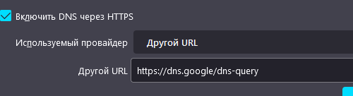
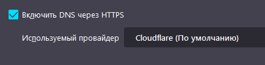
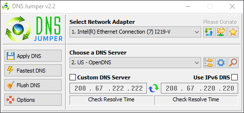

При смене User Agent’а в браузере Firefox через настройку “general.useragent.override” в about:config, расширение полностью отваливается и не подключается к прокси. Есть ли способ решить это или объяснить почему так происходит?
Версия Firefox 101.0b9
https://antizapret.prostovpn.org/proxy.pac блокирует некоторые проблемные user-agent’ы. Вы можете привести пример user-agent’а, который у вас не работает с расширением?
Самый стандартный User Agent Chrome
Mozilla/5.0 (Windows NT 10.0; Win64; x64) AppleWebKit/537.36 (KHTML, like Gecko) Chrome/100.0.4896.60 Safari/537.36
В расширении user-agent никак не считывается и не меняется за исключением запросов к новостям через GitHub API (runet-censorship-bypass/App.js at 8f00516d44e3b938aa004ea5381bdb5cbc6b5355 · anticensority/runet-censorship-bypass · GitHub).
Передал вашу жалобу администратору antizapret.prostovpn.org --, может, у него будут идеи.
Проявляется ли проблема, если использовать PAC-скрипт “Антицензорити”? Не обязательно настраивать тор или свои прокси – просто проверьте, скачивается ли он и уставливается ли.
Некритичная ошибка. Всё хорошо, продолжаем работу.
Ну, значит проблема на стороне АнтиЗапрета.
Для полноты картины давайте посмотрим ошибки в логах после установки “Антицензорити”:
- Переключить PAC-скрипт на Антицензорити.
- Открыть about:debugging#/runtime/this-firefox.
- Найти наше расширение, нажать Inspect/Исследовать и запечатлеть красные записи (ошибки).
- Также можно посмотреть в Browser console: Ctrl+Shift+J. Там может быть много незначительных ошибок, не пугайтесь.
[…]полностью отваливается и не подключается к прокси[…]
Опишите более подробно, что происходит: расширение аварийно завершается и не показывает никаких ошибок?
У меня проблема не проявляется. При смене user-agent через изменение general.useragent.override на указанный в Расширение не работает с пользовательским User Agent в браузере Firefox - #3 by jestxfot, работоспособность расширения никак не меняется.
Firefox 100.0.2.
Попробуйте ещё этот, через файл mozilla.cfg
lockPref("general.useragent.override", "Mozilla/5.0 (Windows NT 10.0; Win64; x64) AppleWebKit/537.36 (KHTML, like Gecko) Chrome/98.0.4758.102 Safari/537.36")
Ошибок никаких нет. Ничего не происходит.

Если вы используете DNS-сервер от провайдера, то попробуйте сменить его на один из этих:
- От Google: 8.8.8.8 и 8.8.4.4.
- От CloudFlare: 1.1.1.1 и 1.0.0.1.
- www.quad9.net.
Стоял https://dns.google/dns-query - 0 реакций

Убрал галочку - 0 реакций
Поставил CloudFlare - 0 реакций

Ни один из DNS не дал нужного результата

При подключении к сайту висит эта загрузка
Это всё что есть в соединениях, не знаю насколько нормальный тут пинг
{kind=link}
Попробуйте их новый адрес: https://proton.me.
Я знаю что он не заблокирован, я в принципе могу зайти, но это не панацея. У других сайтов зеркал то нет, мне не только протон нужен.
- Создал новый профиль Firefox
- Установил «обход блокировок Рунета»
- Изменил user-agent через about:config
Ничего не изменилось. Расширение продолжает работать, сайты продолжают проксироваться. Обновления листа не меняет поведение.
Вывод — проблема на вашей стороне, возможно, в бета-версии браузера.